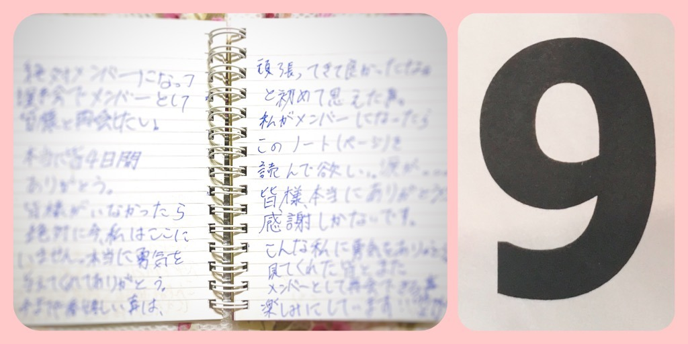
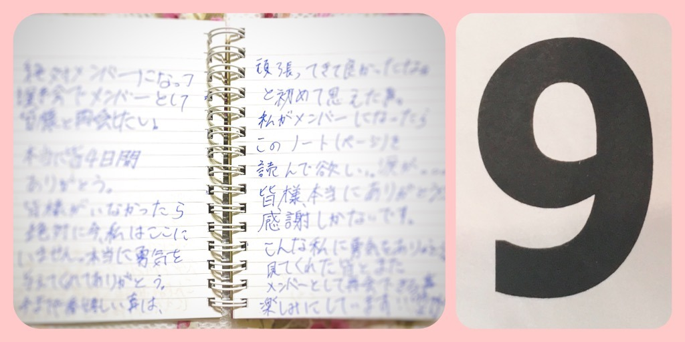

| 2020/06 06 Sat | 裸足で◯◯◯♪ 黒見明香 |
週末が来たよー ✩︎⡱
暑い中、今週も本当にお疲れ様でした☺︎
ココを見つけてくださり ありがとうございます♪
乃木坂46 新４期生の黒見明香です。
すこーしだけ自己紹介させてくださいませ☺︎
♪:*:･･:*:･･:*:･･:*:･･:*:･･:*:･♪:*:･･:*:･･:*:･･:*:･･:*:･･:*:･♪
黒見 明香（くろみ はるか）
2004年1月19日生まれ 16才
香港生まれ・東京都出身です
あだ名： くろみん・黒見ちゃん
3の倍数9・6・3(くろみ)
と覚えてもらえたら嬉しいです♪
⭐︎ 2017年末の黒見家にて
私「アレッ!? お父さんどうしてサンタさんに送った 私の手紙持ってるの？」
父「・・・そりゃあ、ほら、あれだよっ・・・汗
サンタがプレゼント間違えて届けた時に返品交換できるよう、
＊
どうぞ少しでもゆっくり出来ますように。。
シンプルなガラスの風鈴に
下手ながらも絵を描いて、ベランダに飾ってみました♪
♪:*:･･:*:･･:*:･･:*:･･:*:･･:*:･♪:*:･･:*:･･:*:･･:*:･･:*:･･:*:･♪

よだん(余談)✩︎⡱ 3次審査の番号は・・まさかの 「１番」でした。
合格者が順番に呼ばれて、説明のお部屋に入る時、一番最初に着いていたので、

勇気を出して初めてコメントして下さった方、
毎日こんな風に過ごしたよーって報告して下さる方も、
大切な時間を使ってお話しして下さり
本当にありがとうございます✨
大事に、一つずつ全部読ませて頂いています((〃ω〃))
皆さんのことを知ることが出来る、
私の１日の中で１番幸せな時間です♩
直接お話しできる時が、 待ち遠しいです✩︎⡱
実は、、、前回最後の部分で「軽く！簡潔な！」
＊
いろいろ変化のある、月始めの１週間、
ほんとうにお疲れ様でした✨
皆さんが少しでもリラックスできますように...✩︎⡱
と願っています(*´-`)
初めて会える日を、楽しみに待っています♪
＊
明日は「いつか焼肉屋さんに行ってみようー！」と誘ってくれる大好きな璃果ちゃんですよー！
読んでくださり、本当にありがとうございます☺︎
次回も、会えたら嬉しいなぁ✨
またねヾ(･ω･*)
くろみはるか☺︎
☆ 本日のあなたのラッキーナンバー：３ と ８
♪:*:･･:*:･･:*:･･:*:･･:*:･･:*:･♪:*:･･:*:･･:*:･･:*:･･:*:･･:*:･♪
暑い中、今週も本当にお疲れ様でした☺︎
ココを見つけてくださり ありがとうございます♪
乃木坂46 新４期生の黒見明香です。
すこーしだけ自己紹介させてくださいませ☺︎
♪:*:･･:*:･･:*:･･:*:･･:*:･･:*:･♪:*:･･:*:･･:*:･･:*:･･:*:･･:*:･♪
黒見 明香（くろみ はるか）
2004年1月19日生まれ 16才
香港生まれ・東京都出身です
あだ名： くろみん・黒見ちゃん
3の倍数9・6・3(くろみ)
と覚えてもらえたら嬉しいです♪
⭐︎ 2017年末の黒見家にて
私「アレッ!? お父さんどうしてサンタさんに送った 私の手紙持ってるの？」
父「・・・そりゃあ、ほら、あれだよっ・・・汗
サンタがプレゼント間違えて届けた時に返品交換できるよう、
証拠としてコピーとっといたんだよ」
私「なるほどー！お父さん、頭イイーー(๑˃̵ᴗ˂̵)！」
（いやいや！通販かーーーい Σ（ﾟдﾟlll）)
♪:*:･･:*:･･:*:･･:*:･･:*:･･:*:･♪:*:･･:*:･･:*:･･:*:･･:*:･･:*:･♪

-:-:୨୧:-:- ま、まぶしい・・・・

-:-:୨୧:-:- オレンジの夕陽に染められます
すっかり暑くなりましたね〜！
日差しがもう夏のようですね✨
（いやいや！通販かーーーい Σ（ﾟдﾟlll）)
♪:*:･･:*:･･:*:･･:*:･･:*:･･:*:･♪:*:･･:*:･･:*:･･:*:･･:*:･･:*:･♪
-:-:୨୧:-:- ま、まぶしい・・・・
-:-:୨୧:-:- オレンジの夕陽に染められます
すっかり暑くなりましたね〜！
日差しがもう夏のようですね✨
裸足でSummerやガールズルール、、、
聴きたくなっちゃいますね ♡
＊
今週はどんな週でしたか・・・？
６月が始まって最初の週、
少しずつ元の生活に戻っていく中で
６月が始まって最初の週、
少しずつ元の生活に戻っていく中で
不安になったり悩んじゃったり...
体や心がスピードに慣れなかったり、
今週はハードだった方も多いことと思います(>_<)
今週はハードだった方も多いことと思います(>_<)
＊
どうぞ少しでもゆっくり出来ますように。。
週末お仕事や勉強、いろいろとお忙しくされてる方も
ちょっぴりでも...身体を労ってあげてくださいね(*´-`)
♪:*:･･:*:･･:*:･･:*:･･:*:･･:*:･♪:*:･･:*:･･:*:･･:*:･･:*:･･:*:･♪

【 風鈴の音〜 チリリーン〜♬ 】
【 風鈴の音〜 チリリーン〜♬ 】
⚫︎小さい頃、夏休みの時によくやっていたことはありますか？
夏になると、ラジオ体操の帰りに、近所の喫茶店の前に飾ってある、
大好きな風鈴の音を聞きに行っていました笑
＊
耳だけでも涼やかな気分になれたらいいなぁ。。。と
シンプルなガラスの風鈴に
下手ながらも絵を描いて、ベランダに飾ってみました♪
＊
初夏の爽やかな風にのって
初夏の爽やかな風にのって
短冊がくるくる回りながら、時折。。。
"ちりりーん"と涼やかな音を聞かせてくれます✨
＊
先日の花火は見えましたかー？
日本の夏って良いですよね〜((〃ω〃))♡
＊
＊
短冊には 今1番のお願いごと
「◢⁴⁶ ファミリーの皆が 笑顔の夏を 迎えられますように☺︎」
と書きました。
ファミリーは、もちろん今ココを読んでくださっている
大切なあなたです☺︎
＊
「世界中の隣人よ」のメッセージのように
乃木坂を築いてこられた尊敬する先輩方、
そばで見守り、一緒に歩んでくださる皆さま、
乃木坂を囲む 大きな家族の 大切なみんなが
どうか少しでも 笑顔になれるような夏を
無事迎えられますように。。。✩︎⡱
＊(字と絵が下手なのは、通常運転です\(//∇//)\
ごめんなさい、頑張ります！）
♪:*:･･:*:･･:*:･･:*:･･:*:･･:*:･♪:*:･･:*:･･:*:･･:*:･･:*:･･:*:･♪

2年前の 中学生(14才)当時、感動で涙しながら、寝落ちウトウトしながら書いていた日記なので、字が汚すぎて載せるのをずっと悩んでいたのですが、うっすらぼかし？自主規制でお許しください...\(//∇//)\
【 オーディションのこと 】
⚫︎ 坂道オーディションをやっている最中に一番印象に残っている事は何？
一番印象に残っていることは、何よりSHOWROOM審査を通じて、乃木坂46・欅坂46・けやき坂46を応援して下さる皆さまのお話を直接聞ける嬉しさ、あたたかさ・・・に触れさせて頂いたことです✩︎⡱
（オーディション当時はけやき坂46さんでした☺︎）
♬ *。♩*。♬
◎ SHOWROOM審査を終え、最終審査を迎える前の晩に書いていた日記の一部です
〜略〜こんな私でも応援してくれた皆の優しさに感謝です！絶対に諦めず進もうと思わせてくれました。スタートラインに立つためにも、こんなに応援して下さる皆さんにも必ず恩を返すためにも、メンバーになって、握手会でメンバーとして皆様と再会したい！
皆さまがいなかったら、絶対、私はここにいません。本当に勇気を与えてくれてありがとう。今までで一番嬉しい事は、頑張ってきて良かったなぁと、初めて思えた事。
〜略〜こんな私に勇気をありがとう。９ちゃんより〜
＊
今もずっと同じ気持ちです。
こうして忙しい毎日の中で、
畏れ多くも、ありがたくも、
まだ直接お話し出来たことのない私の
拙いブログを読んで下さったり、
写真を見たり、応援して下さったり、
コメントにメッセージを送って下さったりすることが
何より嬉しいことで、一番幸せな時間です。
♬ *。♩*。♬
⚫︎ オーディションの時に気をつけた事を教えてください！
一つは、上手くできなくてもいいから、大好きな"気持ちを伝えよう"と思っていました。
確か2次審査は、緊張しすぎて泣きながら歌っていたような記憶があります・・・汗
オーディションの一番初めのセミナーから、番号や日記も書いていたので^^;;また、少しづつ、私でも何か答えられることがあったら、載せさせてくださいね♪
♬ *。♩*。♬
【 最終審査 9番 】
⚫︎与田ちゃんとのエピソード最高です！さすがオーディション番号9番同士だね
何か通じるとこがあったのかな ？
⚫︎黒見ちゃんは、その話与田ちゃんには伝えたのかな？喜ぶと思うよ～！
何か通じるとこがあったのかな ？
⚫︎黒見ちゃんは、その話与田ちゃんには伝えたのかな？喜ぶと思うよ～！
（与田祐希さん♡が天使すぎるお話はこちら↓ ）
奇しくも、最終審査番号９番で、「きゅーちゃん」として始めたSHOWROOM配信中にも、たくさんの乃木坂ファンの皆さまが「与田祐希さんと同じだよ！」と教えて下さり、
『 ９番をラッキーナンバーにしなきゃだね！ 』とお話して下さいました。
＊
お忙しい合間に、緊張していたイチ中学生に、
まさかの応援下さった事、覚えていらっしゃらないかと存じますが、
私にとって一生忘れられない大切な思い出を頂きました((〃ω〃))
（まだお話は出来ていないのですが、お会いできたら一方的に心からの感謝✨をお伝えしたいなぁと思っています。）
＊
オーディション時、名前は非公開で番号呼びだったのですが、本名黒見(９６３)で、
９がなんだか縁のある不思議な数字となりました☺︎
♬ *。♩*。♬
よだん(余談)✩︎⡱ 3次審査の番号は・・まさかの 「１番」でした。
合格者が順番に呼ばれて、説明のお部屋に入る時、一番最初に着いていたので、
そのまま入らずドアを開けて、「どうぞー」していたら、
列が途切れて入った時、頂いた次の最終審査用の番号が
たまたま「９番」でした。
♬ *。♩*。♬
⚫︎坂道オーディションを受けようと思ったきっかけは何ですか？
中学校の合宿での「制服のマネキン」、セミナーで聞かせて下さった秋元真夏さん♡鈴木絢音さん♡久保史緒里さん♡の素敵なお話です。↓
♪:*:･･:*:･･:*:･･:*:･･:*:･･:*:･♪:*:･･:*:･･:*:･･:*:･･:*:･･:*:･♪
まぶしいけど、我慢してみました・・・\(//∇//)\
＊
コメントや質問 ありがとうございます♡
勇気を出して初めてコメントして下さった方、
毎日こんな風に過ごしたよーって報告して下さる方も、
大切な時間を使ってお話しして下さり
本当にありがとうございます✨
大事に、一つずつ全部読ませて頂いています((〃ω〃))
皆さんのことを知ることが出来る、
私の１日の中で１番幸せな時間です♩
直接お話しできる時が、 待ち遠しいです✩︎⡱
実は、、、前回最後の部分で「軽く！簡潔な！」
ブログを目指すねと書いていたけれど...
少しは軽くなったのかなぁ。。。？笑
くろみんのページ重い〜と教えて下さった方も、
長い方が嬉しいよ〜と声をかけて下さった方も、
またいろいろ試行錯誤させてくださいね^^;;
＊
いろいろ変化のある、月始めの１週間、
ほんとうにお疲れ様でした✨
皆さんが少しでもリラックスできますように...✩︎⡱
と願っています(*´-`)
初めて会える日を、楽しみに待っています♪
＊
明日は「いつか焼肉屋さんに行ってみようー！」と誘ってくれる大好きな璃果ちゃんですよー！
読んでくださり、本当にありがとうございます☺︎
次回も、会えたら嬉しいなぁ✨
またねヾ(･ω･*)
くろみはるか☺︎
☆ 本日のあなたのラッキーナンバー：３ と ８
♪:*:･･:*:･･:*:･･:*:･･:*:･･:*:･♪:*:･･:*:･･:*:･･:*:･･:*:･･:*:･♪
・
・
・
＜こっそりアンコール♬ 笑＞
⚫︎くろみん、サインは決まりましたか？サインの練習はしてる？
ちょうど✨今！練習しているところです⭐︎ 出来立てホヤホヤで安定しないので、ちょっと不安ですが...(･･;;いっぱい練習して頑張りますー！
⚫︎既にバンジージャンプを経験してらっしゃるとの事ですが、乃木中のヒット祈願や企画などで飛べる自信はありますか？
・・・こ、こ、怖いですがΣ(-᷅_-᷄๑)
乃木坂のためだったら、何でも出来るんだ！という覚悟でございます。(正座)
＊
⚫︎乃木坂46時間TVの絵は明後日描きます。まだ間に合うかな？
⚫︎ くろみちゃんのイラストも描きたいな〜って思ってるんだけど、下手くそだけど大丈夫かな？
もちろんー(๑˃̵ᴗ˂̵)イラスト本当に嬉しすぎます✨
私自身が絵が下手すぎるので（日村さんの似顔絵も大変申し訳なく。。汗）
描いて下さる気持ちが嬉しいですー！！
面白い顔でも、なんちゃって絵でもぜひ見せて貰えたら本当に嬉しいー♪
バナナマン日村さんの似顔絵が気になった方はコチラ↓
（今日はいろんなところに、リンクを埋めるのだなも☺︎笑）
＊
⚫︎新4期生のみんなをそれぞれ動物で例えるなら？？
⭐︎璃果ちゃん
パピヨン 可愛くて人懐っこくて真っ直ぐなイメージだから♡
⭐︎瑠奈ちゃん
黒猫ちゃん 黒の服がカッコよく似合ってて猫っぽいところも大好きだから♡
⭐︎美佑ちゃん
白猫ちゃん(＝きなこさん) 美佑ちゃん家のきなこさんが可愛すぎるのと色白美人だから♡
⭐︎奈於ちゃん
ポメラニアン オーラがあってゴージャスで家族を大事にしていて尊敬しているから♡
かな・・☺︎？動物で例えるのむずかしい。。笑
＊
⚫︎学校再開されたけど、学校どうだった〜？
⚫︎くろみんは、6月になって何か、生活が変わりましたか？
私も学校が始まりましたー！通学って意外と体力要ったんだなぁ。。て当たり前だったことを少しずつ思い出しました。
登校しているみんなも、通勤されてるみんなも、来週も一緒に頑張ろうね (*ˊᵕˋ*)੭
⚫︎茶道部にどんな印象ありますか？？
カッコいい✨です。姿勢も和服もわびさびも、嗜んでらっしゃるのがかっこいいなぁと思います。学校の運動会の部活対抗リレーでは、茶道部の皆んなは浴衣で上品に走るので、優雅な時代劇を見ているようでうっとりします♩
＊
⚫︎朝ごはんはご飯派?パン派?それ以外?
最近は、パン好きな先輩メンバーの方々の影響でパンが増えました！
（トーストにはちみつバターが多いです☺︎）
でも・・・卵かけご飯も最高ですよね(〃ω〃)笑
⚫︎スイカとメロンどっちが好きですか！？
どちらも大好きだよー♡ 乃木坂なら"スイカ"かな？
⚫︎今この質問を見てるときのくろみんのエナジーの数はいくつかな？？
プロスピイベントの楽しい報告もたくさんありがとうございます♬
今2000くらいでイベントの結果は...悔しさが残りました\(//∇//)\笑 次も楽しみましょうねー！
＊
⚫︎ブログとかの質問っていつくらいまで受け付けてるんですか？
⚫︎いつくらいまでに質問すれば答えてもらえる可能性があるんですか？
期限はないよー☺︎ 全部嬉しく、一つ一つ読ませて頂いてるよ✩︎⡱
１回目の4/27のブログから、まだ答えられていない質問はノートに書かせてもらっていて、どうしても掲載できるのは量が限られてしまうけれど汗 気軽にいつでも書いて貰えたら本当に嬉しいナ☺︎ のんび〜り待っててくれたら嬉しいです♪
＊
⚫︎もうし、海外の人が握手会へ行きたかったら、なんの話すればがいいですか？
⚫︎ 日本語のコメントのみされていますか？（実際、私の第一言語はスペイン語です）
辞書で調べて下さったり、翻訳アプリ等で時間を掛けてコメントを書いてくださってる方も本当にありがとうございます！（どんな話でも、皆さんの事を教えて下さい♩）
気持ちはバッチリ受け取っています☺︎私も言葉の勉強頑張ります！翻訳しながら読んでくださることに感動しています✨いろいろな場所からパワーを贈って下さりありがとうございます。
⚫︎Hello from Singapore! I hope you'll continue to work hard as a member of Nogizaka from now on, right?
⚫︎Well, just so u know, Ayamen's is on exactly a week from today, so it'd be kinda, sorta cool if u could tell her HBD once again on your next article, Rachelgemini
Thank you so much for lovely messages. And YES, I'm definitely happy to do so : ) <3
ついに明後日は、筒井あやめちゃん16歳のお誕生日✨
"花咲くシックスティーン" by伊藤万理華さん&るなぴちゃん
どうぞいっぱい楽しい思い出ができますように✩︎⡱
半年同じ年になれるの嬉しいなぁ♡
お誕生日迎える方、素敵な一年になりますように♬
♪:*:･･:*:･･:*:･･:*:･･:*:･･:*:･♪:*:･･:*:･･:*:･･:*:･･:*:･･:*:･♪
ここまで読んでくださったアナタ、ほんとうにありがとう♡
またねヾ(･ω･*)
コメント(319)
2020/06/06 19:18
コメント(319)
サンタさん早く
女神様に会わせてください。
よろしくお願いします。
くろみさんが輝く姿を見て(眩しくて)目を瞑る日が早く来ればいいのに…！
今も充分輝いてるけどね( ᷇࿀ ᷆ )
質問です！弓道についてどんな印象がありますか？
あと弓道部なので応援してください！
くろみんのブログは色々と教えてくれるからすごい嬉しいよ！
また楽しみにしてるね～！
質問
夏に聞きたい曲は？
Showroom審査の時からくろみんに出会えていて良かったです！ノート感動しました(；ω；) わたしとこのノートが読めてよかったです！これからも応援してます！！
わたしも学校始まりました！高3で進路に悩みまくって先生と面談して号泣したり辛かった1週間でした、、少しでも全然大丈夫なので進路決め応援メッセージみたいなものほしいです！
46時間TVの期別コーナーの詳細見ました！4期生の「みんなでお菓子の家を作ろう」楽しみです！学校で見られない所もありますが、見られるところは全力で見ます(*^^*)
それでは！身体に気をつけてくださいね〜
今日も写真が可愛いなぁ〜！
明日まで仕事だから頑張れそうです♪
本当最近暑いですね！今年の夏は越せるか不安です…（笑）
風鈴なんて一気に夏！って感じですね〜！！
てか、字が上手！！羨ましい〜( ´ ▽ ` )
私は字が下手くそだけど、手紙書いてもいいかな？
あんまり特定の先輩のお話を詳しくしてない
イメージだったから与田さんの話がいっぱい出てきて嬉しい！
与田さん推しなので、推し同士のエピソード聞けて幸せ〜！
私も9を大事にしていきたいです！！
学校も仕事もさ、通学通勤の時間が
すごくもったいないと思ってしまいます笑
行ったら、いいんですけどね…
無駄だなぁって感じてしまいます(*_*)
がんばって通いましょう笑
黒見さんが待ち遠しいなんて言うもんだから、
私も早く会いたくてたまりません！
本当に楽しみ！そのために仕事頑張りたいと思います♪
またブログ更新楽しみにしています(*´-`)
圧倒的な可愛さ、ほんとに大好きです！ᵕ̈
ブログ更新ありがとう ︎❤︎︎
初めてブログを見たんだけど、とても元気をもらいました
いつあるか分からないけれど次回の握手会は必ず行くよ
大変な時期だけど体調には気をつけて
次回のブログも楽しみにしてます
質問
行ってみたい都道府県はどこですか？
Twitterの4期生プロフィルクイズで、くろみんのミドルネームが質問になったみたいだよ＼(^o^)／もちろん超簡単だよ(*´ω｀*)
お父さんとサンタの手紙エピソードが可愛すぎるよ(*´ω｀*)
しかも、これは3年前の話でしょう？！(ﾟдﾟ)！（笑）
くろみんは何歳までサンタさんのことを信じていたの？あっ、未だに信じてもいいよ(*´ω｀*)
あっ、風鈴との写真はめちゃ良いなあ
やっぱりチャイナっぽい服が似合うなあ(*´ω｀*)凄く綺麗だよ＼(^o^)／
「ファミリーの皆」って、くろみんのファンを「ファミリー」って呼ぶの？
そして、日記のページを載せてくれてありがとう
でもなんか失礼だな、他人の日記を読むって(｡>﹏<｡)（笑）
SHOWROOMといえば、最近またのぎおびが復活するから、新4期生の担当も回ってくる可能性もあるよね＼(^o^)／正直に言うと、自分は前ののSHOWROOM配信を見てなかったから、期待するよ＼(^o^)／
いつかりかちゃんと焼き肉に行けたら良いよね＼(^o^)／
こっそりアンコール
・へ～？バンジージャンプ経験者か？もし本当にこういうヒット祈願が来たら、頑張って(｡>﹏<｡)
・新4期生のことを動物に例えたって、犬と猫ばかりじゃん！（笑）ごめん、我慢できなくて突っ込みたかったよ(｡>﹏<｡)（笑）
・質問といえば、質問があるよ＼(^o^)／：
『くろみんは自分のチャームポイントは何だと思う？』
個人的に、目のホクロだと思うよ(*´ω｀*)そんなに涙袋に近いホクロが初めて見たかも(ﾟдﾟ)！
そして、最後に英語のコメントも返したって
今気づいたけど、よくかんがえるっとくろみんは中国と英語両方ある程度できるよね？
じゃー、今後の海外の仕事は絶対くろみんが連れて行くでしょう？＼(^o^)／
（あっ、でもまだ学生だから無理かな(｡>﹏<｡)）
これからも頑張って(/･ω･)/
あやめんはまだ16歳か？(ﾟдﾟ)！本当にあの子が大人っぽい過ぎて、全然分からないよ(｡>﹏<｡)
くろみんはどう思う？
黒見ちゃんのサイン早く見たいな～
ひとつの楽しみだぜぃ!!!
コロナ禍で２ヶ月休業してましたが、昨晩からやっと仕事再開しました まだ全開ではないですがね
早く普通の生活に戻ればいいね
はるかちゃんも身体に気をつけて頑張ってね
私も学校が始まった〜 通学って体力が必要だよね、うん、すごく実感した〜!!学校まで自転車を片道30分くらい漕いで行ってるんだけど、着いた頃には汗だくだしもう嫌になっちゃう〜
だから前髪をあげるようにしたの〜!!
分散登校のおかげでクラスの女子の中で自転車通学が私だけだから1人だけありえないくらい汗だくでもう本当に困ります…(笑)
帰ってくるときにはフラフラです…何気ない日常で体力は養われていたんだなぁと感じました…(笑)
くろみんの英語力を尊敬しております。ですので毎日オンラインで海外の先生とお話してます。頑張るね ° ✧ (*´ `*) ✧ °
ブログ更新ありがとう☺︎︎︎︎
こちらは最近ポケモンGOにハマって
いつもより外に出る回数が増えました！！
ゲームで健康的になれるっていいですね！！
6月になりましたね〜！
気を引き締めて頑張ります！！
あやめちゃんの誕生日全力で祝います！！
質問も置いておきます！
3・6・9と言えばニコラ店テスラさんですね〜
どんな方がご存知ですか？
それでは、また！
ブログ更新ありがとう!
每次のブログお疲れ様
46TVあと二周
4期生の"お菓子の家を作ろう"
面白いと感じる
今すごく楽しみに
ありがとう
またね!!
σ(・ω・)は、とっくの昔に「高校時代」は終わってるし、くろみんが生まれた時くらいには「バリッバリの社会人」として働いてたから、学校時代が懐かしいよ( *´艸｀)♪
そして、あっという間に６月に入り、これから「あっぢぃ～_(:3 」∠)_」って言いながらの「夏」が始まるねぇ～☆彡
僕は、夏！と言っても良い思い出ないからなぁ～(´・ω・`) 唯一夏を感じるのは「ぼくのなつやすみ」っていうゲーム実況をYouTubeで見ると、「もう夏かぁ～(*^▽^*)」ってなるし、ＴＶでいろいろやる「怪談話」を見ると、心身共に冷えて「夏だなぁ～」って感じるよ。
そして、σ(・ω・)はもう学校も何もないから、今の僕の役目は「乃木メンという妹達が日々、楽しく乃木活をして、ファンの人達と交流出来てれば嬉しいなぁ～」って思いながら、ブログも毎日のように５人分読んでるよ。
だって、５人はまだ「新しい環境（乃木坂46）に加入して、右も左も分からない状態だから、それを黙って見てるのもお兄ちゃんとして失格やなぁ～って思ったから(●´ω｀●)」
（それと、乃木メンのファンの人達は４５人全員の「ちょっとした変化」を瞬時に捉えて、思いを言ってくれる、家族同然なんだから沢山楽しみなね☆彡これからの乃木活を(*´▽｀*)）
今日のブログ写真も「ま、、、眩しい(/ω・＼)」ってやりながらも、「逆光でも頑張るもん」っていうくろみんの、「小さな熱意」が伝わってきたような気がした。
そして、やっぱり「夏と言えば、風鈴」だよねぇ～。(●´ω｀●)
風鈴も、今となっては貴重なものだし、実際に僕が「０歳」（赤ちゃん）の時に親が風鈴買ってきて、僕の目の前に出すから、僕は「風鈴＝おもちゃ」だと思って、めっちゃ遊んでたっていう事を聞かされたことがある( *´艸｀)
（ここで、ゆみっき～の「記憶にございません」が役に立つね(笑)( *´艸｀)）
最近はくろみんの「質問コーナー」の「こっそりアンコール」が定番になりつつあるね。そして、もうくろみんもリレー形式ブログをはじめてから９回目だから、自身も慣れてきた？でしょ～( *´艸｀)
ってか、同期の「あやめん」よりも１つお姉ちゃんっていう事に今更驚いているお兄ちゃんでござる(笑)( *´艸｀)
それじゃあ、次のブログもめっちゃ楽しみにしてるねぇ～ヽ(^o^)丿また５日後に会おうね♪
明日も一日！一緒にお家時間を楽しもうね♪大好きだよ♪くろみん☆彡
（最近は、学校とプチ乃木活等々があって、来る！４６時間ＴＶの準備もあるしで、ちょっとバタバタし出したのかな？っていうのが分かるくらい、いい汗かいてるね♪(●´ω｀●)熱中症等々にならないように気を付けながら、お互い楽しい日々を過ごそうね♪）
くろみちゃんが朝ごはんパン増えたって言ってるからわたしもパンにする〜〜！！！マネする〜〜！
9番には縁があるのは本当にさすがだと思う！！
くろみちゃんの影響で掛け算の中で3の倍数が好きになったよ！
くろみちゃんコメント返しありがとう！！！( •̥ ˍ •̥ )♡♡
頑張ってくろみちゃんのイラスト描くね！！
下手っぴだけど頑張るから見ててくれたら嬉しい…！
見てね( ᵕ ᵕ̩̩ )♡♡
質問です！
くろみちゃんのサイリウムカラーは決まってる？？
好きな色は〜？
くろみちゃんが伝えるブログの文章が凄く凄く好きです！
わたしより年下なのに考えてることとか何から何まで完璧だし尊敬するところばかりだしカッコイイし可愛い！
いつもブログの文章をみて、いっぱい憧れるし頑張ろう！って思うよ！♡♡
2週間後は46時間tvだね！くろみちゃんのことずっと見てるよ！！
今日も明日もこれからもずっとだいすきです( ᵕ ᵕ̩̩ )♡♡
コメントする